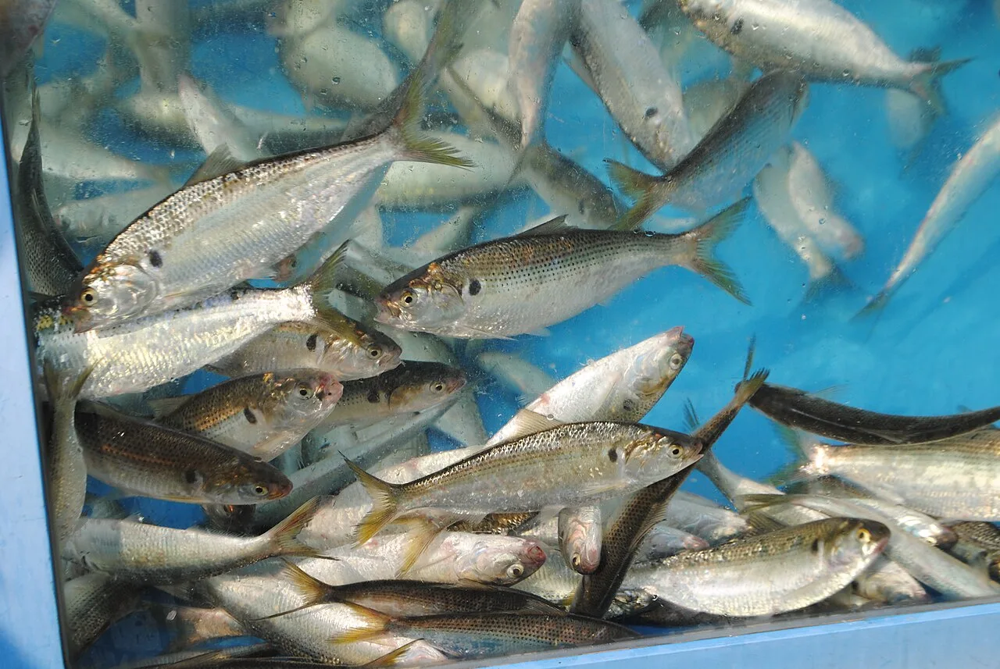
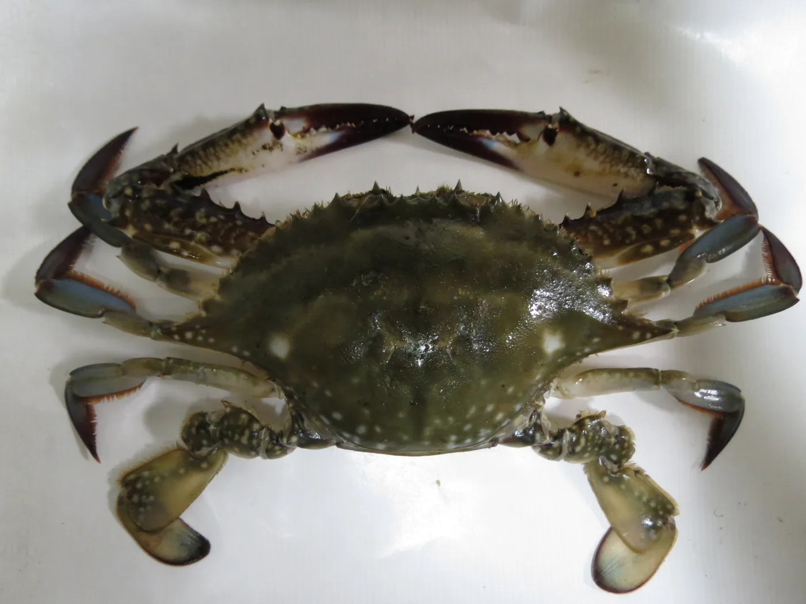
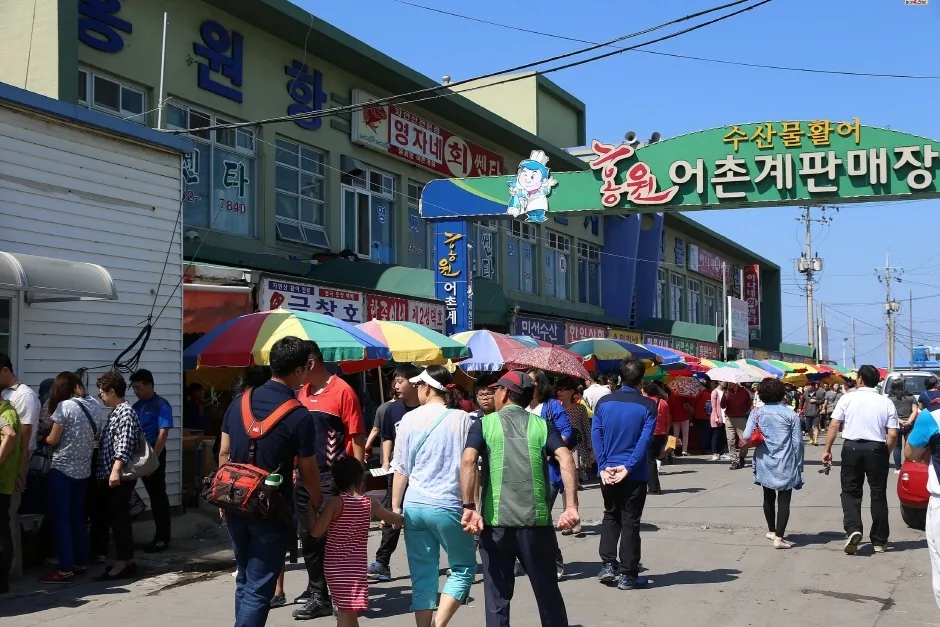
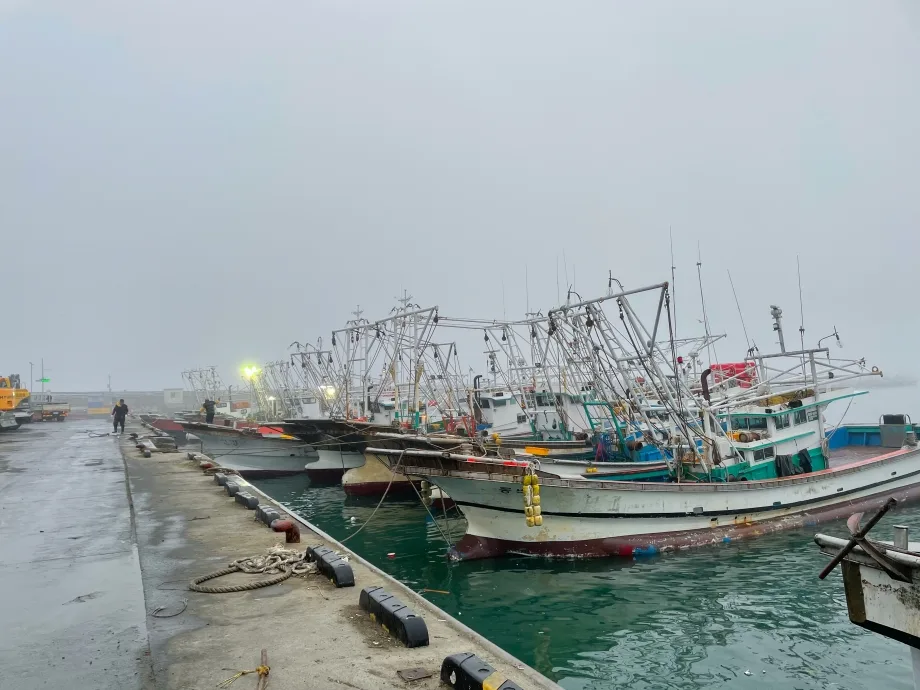

▲ 축제 기간 홍원항 전경. 항구를 따라 행사 천막이 늘어서고 주차장이 방문객 차량으로 가득 찼다
충남 서천군 서면 도둔리, 서해를 마주 보는 홍원항은 매년 늦여름이면 서해안에서 가장 붐비는 포구 중 하나가 된다. 1991년 국가어항으로 지정된 이곳에서 봄엔 주꾸미가, 가을엔 자연산 전어와 꽃게가 올라오는데, 이를 기념해 열리는 홍원항 자연산 전어·꽃게 축제가 올해로 24회를 맞았다. 다만 2026년 축제는 8월 22일부터 9월 6일까지 16일간으로 이미 막을 내렸다. 축제는 짧게 끝나도 전어와 꽃게가 가장 맛있는 시기는 가을 내내 이어지는 만큼, 지금 홍원항을 찾아도 늦지 않다. 축제 프로그램부터 미식 정보, 가는 법, 근교 연계 코스까지 순서대로 정리했다.
1. 왜 서천 홍원항인가 — 서해안 대표 포구의 사계절

▲ 홍원항 방파제의 붉은 등대. 서해를 마주 보는 이 자리가 홍원항의 상징적인 포토스폿이다 ⓒ 서천군
홍원항은 춘장대해수욕장과 비인해수욕장 사이, 완만한 갯벌 해안을 따라 자리한 포구다. 수십 척의 어선이 정박해 있고, 방파제 끝에는 붉은 등대가 서해를 마주 보고 서 있어 산책 코스로도 인기가 많다. 계절마다 잡히는 어종이 달라지는 것이 이곳의 특징인데, 봄에는 동백꽃이 필 무렵 잡히는 주꾸미가, 가을에는 자연산 전어와 살이 꽉 찬 꽃게가 대표 어종으로 꼽힌다. 이 가을 수확을 기념해 홍원항마을축제추진위원회 주관으로 매년 축제가 열리는데, 제24회를 맞은 2026년 축제는 8월 22일부터 9월 6일까지 16일간 홍원항 일원(서천군 서면 홍원길 88)에서 무료 입장으로 진행됐다. 운영시간은 10:00~18:00였다.

▲ 홍원항에 정박한 어선들. 서해 갯벌에서 잡아 올린 자연산 수산물이 이 항구를 통해 곧바로 좌판에 오른다 ⓒ 서천군
2. 전어·꽃게가 가을에 가장 맛있는 이유
'가을 전어는 집 나간 며느리도 돌아오게 한다'는 말이 있을 정도로, 전어는 가을을 대표하는 생선으로 꼽힌다. 전어는 봄에 산란을 마친 뒤 여름 내내 먹이 활동을 하며 살을 찌우는데, 가을로 접어들면 몸에 축적된 지방 함량이 봄철보다 약 3배까지 늘어난다. 이 지방이 고소한 맛의 핵심으로, 회와 회무침, 구이로 먹을 때 특히 진가를 발휘한다. 전어는 부산·마산·사천, 충남 서천, 전남 광양 등 국내 여러 지역에서 잡히지만, 그중에서도 갯벌에서 자란 서천 전어는 특유의 고소함으로 이름이 나 있다.

▲ 홍원항 활어 수조 속 자연산 전어. 가을 전어는 지방 함량이 봄철의 약 3배로 늘어나 고소한 맛이 가장 강하다 ⓒ Wikimedia Commons
꽃게 역시 가을이 제철이다. 산란을 마친 암컷 꽃게가 다시 살을 채우는 시기와 맞물려, 가을 꽃게는 살이 꽉 차고 게딱지 안 내장(장)도 풍부해진다. 홍원항에서는 꽃게찜과 꽃게탕으로 즐기는 경우가 많은데, 방금 잡아 올린 수산물을 항구 좌판이나 수산물 직판장에서 바로 구입해 인근 식당에서 조리해 먹는 방식이 일반적이다.

▲ 꽃게(Portunus trituberculatus). 가을에는 산란을 마친 암컷이 다시 살을 채우면서 게딱지 속 내장까지 풍부해진다 ⓒ Wikimedia Commons
3. 축제 프로그램 — 맨손 전어잡기부터 수산물 장터까지

▲ 축제 기간 홍원항 어촌계판매장 앞 거리. 수산물 좌판과 파라솔이 늘어서고 방문객들로 붐빈다
2026년 제24회 축제 프로그램은 맨손 전어잡기 체험(주말 14:00·15:00, 1인 15,000원), 보물찾기(주말 11:00~16:00), 전어·꽃게 포토존, 상시 운영되는 홍원항 수산물 장터로 구성됐다. 축제장에서는 전어회·전어구이·전어무침, 꽃게찜·꽃게탕 등을 맛볼 수 있는 먹거리 부스도 함께 운영됐다. 입장료는 무료였고, 체험 프로그램만 별도 비용이 있었다.
2026년 축제는 이미 종료됐지만, 홍원항 수산물 장터와 인근 횟집·식당은 축제 기간이 아니어도 연중 운영된다. 다음 해 축제 일정은 통상 매년 8월 초 서천군에서 공지하므로, 정확한 축제 일자는 방문 전 한국관광공사 대한민국 구석구석에서 확인 가능하다.
4. 가는 법·주차 정보

▲ 안개 낀 홍원항 부두. 서해안 항구는 초가을 이른 아침 시야가 급격히 나빠지는 날이 있어 운전 시 주의가 필요하다 ⓒ 서천군
자가용을 이용할 경우 서해안고속도로 서천IC 또는 춘장대IC에서 진입해 서면 방면으로 이동하면 홍원항에 닿는다. 홍원항 주변에는 무료 공영주차장이 있으며, 축제 기간에는 방문객이 몰려 임시 주차 구역이 추가로 운영되는 경우가 많다. 대중교통을 이용한다면 서천공용버스터미널에서 서면 방면 농어촌버스로 환승해야 하는데, 노선과 배차 간격이 자주 바뀌므로 방문 전 실시간 확인이 필요하다.
| 항목 | 내용 |
|---|---|
| 위치 | 충남 서천군 서면 홍원길 88 일원 |
| 2026년 축제 기간 | 8월 22일~9월 6일(16일간, 제24회, 종료) |
| 축제 운영시간 | 10:00~18:00 |
| 입장료 | 무료(체험 프로그램은 유료) |
| 맨손 전어잡기 체험 | 주말 14:00·15:00, 1인 15,000원 |
| 자가용 접근 | 서해안고속도로 서천IC·춘장대IC → 서면 방면 |
| 주차 | 홍원항 인근 공영주차장(무료), 축제 기간 임시주차장 추가 운영 |
| 문의 | 041-950-4414 |
대중교통 노선을 미리 확인하고 싶다면 서천군 대중교통정보에서 확인 가능하다.
5. 근교 연계 여행 코스 — 마량리 동백나무숲·신성리 갈대밭
홍원항만 둘러보고 돌아가기엔 서천은 볼거리가 많은 지역이다. 홍원항에서 차로 10분 거리에는 천연기념물 제169호로 지정된 마량리 동백나무숲이 있다. 수령 500년 안팎의 동백나무 80여 그루가 군락을 이루고 있으며, 숲 정상부의 정자 동백정에 오르면 서해와 오력도까지 한눈에 들어온다. 동백꽃은 3월 하순부터 5월 초순까지가 개화 시기라 가을 방문 시에는 꽃보다는 짙푸른 상록수 숲과 서해 낙조를 감상하는 코스로 좋다. 운영시간은 09:00~18:00이며 매주 월요일은 휴무, 입장료는 성인 1,000원이다.
조금 더 멀리 이동할 여유가 있다면 차로 30분 거리의 신성리 갈대밭도 묶기 좋다. 폭 200m, 길이 1.5km, 총면적 25만㎡ 규모로 국내 4대 갈대밭 중 하나로 꼽히며, 영화 '공동경비구역 JSA' 촬영지로도 유명하다. 연중무휴로 개방되고 입장료는 무료이며, 가을이면 황금빛으로 물든 갈대와 산책로가 인생샷 명소로 인기가 많다. 홍원항에서 오전 수산물 구경과 식사를 마친 뒤, 오후에 마량리 동백나무숲이나 신성리 갈대밭으로 이동하는 일정이 서천 여행의 기본 동선으로 흔히 추천된다.
✅ 서천 홍원항 가을 여행, 가기 전 체크리스트
· 2026년 제24회 홍원항 자연산 전어·꽃게 축제는 8월 22일~9월 6일(16일간) 열리고 이미 종료, 입장은 무료였음
· 전어는 가을에 지방 함량이 봄철의 약 3배로 늘어 고소한 맛이 절정, 서천 갯벌전어가 특히 유명
· 꽃게도 가을이 제철, 산란 후 살을 채운 암컷 꽃게의 내장(장)이 풍부해짐
· 축제 프로그램은 맨손 전어잡기 체험(1인 15,000원)·보물찾기·포토존·수산물 장터
· 홍원항 수산물 장터와 인근 식당은 축제 종료 후에도 연중 운영
· 자가용은 서해안고속도로 서천IC·춘장대IC 이용, 무료 공영주차장 있음
· 근교에 천연기념물 마량리 동백나무숲(성인 1,000원), 신성리 갈대밭(무료) 연계 가능
· 다음 해 축제 정확한 일정은 매년 8월 초 공지되므로 방문 전 재확인 필요